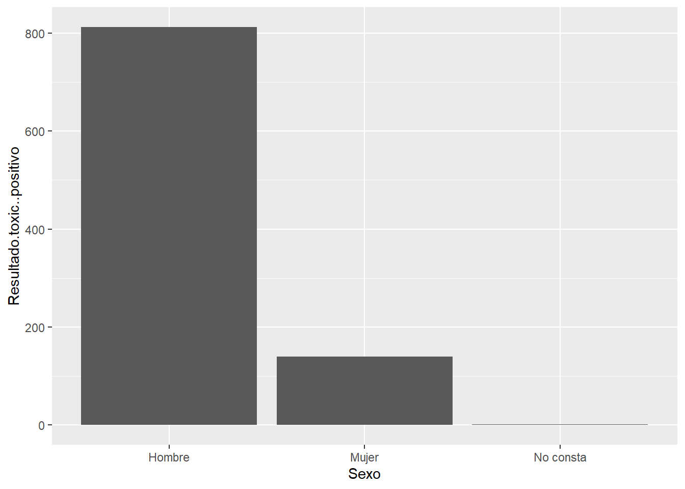

library(tidyverse)Clase 4 - Parte II: Uso de R Markdown (Quarto Document)
Introducción.
En esta clase aprendimos a utilizar RMarkdown (Quarto Document) para elaborar informes, diapositivas y documentos en distintos formatos como HTML, Word y PDF. (instructor: David Murillo).
Ejercicios.
Ejemplo para cambio de formato de texto.
1. Cargar paquetes.
1.1. Utilizaremos el comando “library” para cargar el paquete tidyverse.
Trafico = read.csv2("data/2023.Accidentes_de_Trafico_GAL.csv")
head(Trafico) Ano Data Territorio.INTCF CCAA Provincia Organismo
1 2023 28/09/2023 INTCF-Madrid Cantabria Cantabria INTCF-Madrid
2 2023 01/10/2023 INTCF-Madrid Castilla y León Salamanca INTCF-Madrid
3 2023 02/10/2023 INTCF-Madrid Castilla y León León INTCF-Madrid
4 2023 01/10/2023 INTCF-Madrid Cantabria Cantabria INTCF-Madrid
5 2023 29/09/2023 INTCF-Madrid Castilla-La Mancha Albacete INTCF-Madrid
6 2023 30/09/2023 INTCF-Madrid Comunidad de Madrid Madrid INTCF-Madrid
Zona Rol.no.sinistro Tipo.vehículo Rango.de.idade Sexo
1 Vías interurbanas Conductor Motocicleta 45-54 Hombre
2 Vías interurbanas Conductor Turismo sin remolque 35-44 Hombre
3 Vías urbanas Peatón Peatón 65 o más Mujer
4 Vías interurbanas Conductor Motocicleta 25-34 Hombre
5 Vías interurbanas Conductor Turismo sin remolque 18-24 Hombre
6 Vías interurbanas Acompañante Motocicleta 45-54 Mujer
Resultado.toxicolóxico Etanol Drogas Cocaína Cánnabis Opiáceos
1 Positivo + - - - -
2 Positivo + + + + -
3 Negativo - - - - -
4 Negativo - - - - -
5 Positivo + + - + -
6 Positivo + - - - -
Anfetamina.e.relacionados Cetamina Psicofármacos Benzodiacepinas
1 - - - -
2 - - - -
3 - - - -
4 - - - -
5 - - - -
6 - - - -
Antipsicóticos Antidepresivos Antiepilépticos Opioides Vítimas.mortais
1 - - - - 1
2 - - - - 1
3 - - - - 1
4 - - - - 1
5 - - - - 1
6 - - - - 1
Vítimas.toxic..positivo Resultado.toxic..positivo
1 1 1
2 1 3
3 0 0
4 0 0
5 1 2
6 1 1\[M = s/d\]
Realizar un resumen de datos donde se muestre la cantidad de accidentes por año.
# A tibble: 1 × 2
# Groups: Ano [1]
Ano n
<int> <int>
1 2023 1188ggplot(Trafico, aes(x = Sexo, y = Resultado.toxic..positivo)) +
geom_col()
Trafico |>
glimpse()Rows: 1,188
Columns: 28
$ Ano <int> 2023, 2023, 2023, 2023, 2023, 2023, 2023, 20…
$ Data <chr> "28/09/2023", "01/10/2023", "02/10/2023", "0…
$ Territorio.INTCF <chr> "INTCF-Madrid", "INTCF-Madrid", "INTCF-Madri…
$ CCAA <chr> "Cantabria", "Castilla y León", "Castilla y …
$ Provincia <chr> "Cantabria", "Salamanca", "León", "Cantabria…
$ Organismo <chr> "INTCF-Madrid", "INTCF-Madrid", "INTCF-Madri…
$ Zona <chr> "Vías interurbanas", "Vías interurbanas", "V…
$ Rol.no.sinistro <chr> "Conductor", "Conductor", "Peatón", "Conduct…
$ Tipo.vehículo <chr> "Motocicleta", "Turismo sin remolque", "Peat…
$ Rango.de.idade <chr> "45-54", "35-44", "65 o más", "25-34", "18-2…
$ Sexo <chr> "Hombre", "Hombre", "Mujer", "Hombre", "Homb…
$ Resultado.toxicolóxico <chr> "Positivo", "Positivo", "Negativo", "Negativ…
$ Etanol <chr> "+", "+", "-", "-", "+", "+", "-", "-", "-",…
$ Drogas <chr> "-", "+", "-", "-", "+", "-", "-", "-", "-",…
$ Cocaína <chr> "-", "+", "-", "-", "-", "-", "-", "-", "-",…
$ Cánnabis <chr> "-", "+", "-", "-", "+", "-", "-", "-", "-",…
$ Opiáceos <chr> "-", "-", "-", "-", "-", "-", "-", "-", "-",…
$ Anfetamina.e.relacionados <chr> "-", "-", "-", "-", "-", "-", "-", "-", "-",…
$ Cetamina <chr> "-", "-", "-", "-", "-", "-", "-", "-", "-",…
$ Psicofármacos <chr> "-", "-", "-", "-", "-", "-", "-", "-", "-",…
$ Benzodiacepinas <chr> "-", "-", "-", "-", "-", "-", "-", "-", "-",…
$ Antipsicóticos <chr> "-", "-", "-", "-", "-", "-", "-", "-", "-",…
$ Antidepresivos <chr> "-", "-", "-", "-", "-", "-", "-", "-", "-",…
$ Antiepilépticos <chr> "-", "-", "-", "-", "-", "-", "-", "-", "-",…
$ Opioides <chr> "-", "-", "-", "-", "-", "-", "-", "-", "-",…
$ Vítimas.mortais <int> 1, 1, 1, 1, 1, 1, 1, 1, 1, 1, 1, 1, 1, 1, 1,…
$ Vítimas.toxic..positivo <int> 1, 1, 0, 0, 1, 1, 0, 0, 0, 1, 0, 1, 1, 1, 0,…
$ Resultado.toxic..positivo <int> 1, 3, 0, 0, 2, 1, 0, 0, 0, 2, 0, 2, 1, 1, 0,…